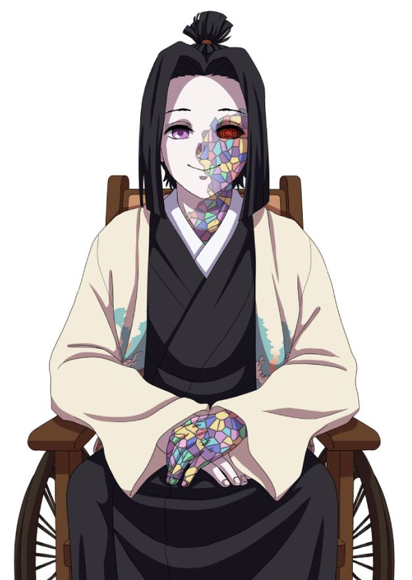

Início › O Mundo de 1934
Cenário & História
Compêndio de informações de Breathe and Live 1934.
Aviso: SPOILERS de Demon Slayer a partir daqui.
O Estado do Esquadrão de Caçadores
O ano é 1934 e algum tempo se passou desde a morte de Muzan Kibutsuji. Com isso, a propriedade dos Caçadores de Demônios descansou cuidadosamente nesse período de paz. Porém, nem 10 anos após sua morte, demônios começaram a ressurgir aqui e ali, por alguma razão. Agora, não tão rica quanto antes, a família Ubuyashiki mais uma vez assumiu o manto de protetora do Japão. Convocaram quantos caçadores puderam para revidar contra os demônios e seu novo líder — embora pareça um empreendimento infrutífero, com os demônios se escondendo com ainda mais astúcia do que antes. Isto é, até os jogadores chegarem.
O atual líder do Esquadrão, Kaisho Ubuyashiki, um prodígio de 17 anos mesmo para a história da família, comanda as linhas de frente. 10 Hashira permanecem como sua última linha de defesa, espalhados entre as forças demoníacas em constante expansão.
Espadachins e Kakushi na era moderna
Desde a derrota de Muzan Kibutsuji, os Caçadores continuaram sua luta valente contra os demônios, carregando o legado de proteger a humanidade das forças sombrias que espreitam. Com acesso a rádios e aos avanços tecnológicos dos anos 20 e 30, os caçadores agora têm comunicação aprimorada e novas ferramentas à disposição.
Conforme o mundo evolui, os papéis dos Kakushi também mudam. Não mais limitados a reconhecimento e coleta de informações, agora assumem responsabilidades adicionais: servem como motoristas — manobrando carros, aviões e navios para transportar caçadores rapidamente —, praticam técnicas médicas avançadas, cuidam dos feridos e conduzem pesquisas para desenvolver novas tecnologias que ajudem na luta.
Com novas invenções e descobertas científicas, o Esquadrão adaptou e integrou técnicas modernas às suas práticas ancestrais. Mas a ameaça dos demônios continua sempre presente, e caçadores e Kakushi precisam constantemente aprimorar suas habilidades, usar seus recursos e trabalhar juntos para proteger a humanidade da escuridão que busca consumi-la.
O Mestre — Kaisho Ubuyashiki

Líder do Esquadrão de Caçadores de Demônios, com 17 anos de idade. Um prodígio mesmo entre a linhagem Ubuyashiki, comanda pessoalmente as linhas de frente da nova guerra.
Os Hashira Atuais
| Pilar | Nome | Estilo |
|---|---|---|
| Pilar da Água | Aki Takumi | Respiração da Água |
| Pilar das Chamas | Hakka-Gu Shintan | Respiração das Chamas |
| Pilar do Vento | Yoshiko Asagao | Respiração do Vento |
| Pilar do Trovão | Kasumi Satsuka | Respiração do Trovão |
| Pilar do Som | Haruka Minami | Respiração do Som |
| Pilar da Névoa | Michi Toshinobu | Respiração da Névoa |
| Pilar do Amor | Katashi Noboru | Respiração do Amor |
| Pilar da Fera | Okubo | Respiração da Fera |
| Pilar do Oceano | Yosuke Wōkuo | Respiração do Oceano |
| Pilar do Oeste | Gai Ongoku | Respiração do Oeste |
A Nova Era Demoníaca
Os demônios há muito assolam a humanidade e, após a destruição de Muzan Kibutsuji, pensou-se que finalmente havia acabado. Porém, por algum meio infernal, o mal prevaleceu. Demônios voltaram a surgir para arrancar a esperança dos braços dos vivos, com uma abordagem drasticamente diferente da anterior.
A líder dos exércitos demoníacos é desconhecida do Esquadrão, embora suas 12 comandantes façam questão de aparecer sempre que Hashira assumem missões. Essas 12 comandantes reivindicam o manto de “Luas” — mas não em uma estrutura ordenada de poder. Desta vez, adotam prefixos com sua característica mais identificável, supostamente nomeadas por sua mestra. Esses nomes viajaram pelos ouvidos de demônios e humanos, e todas as 12 já foram confortavelmente identificadas — veja a tabela das 12 Belas Luas.
Todas as comandantes demoníacas compõem o que o Esquadrão agora chama de “Árvore do Mal”, com suas seitas formando as “raízes” e os “galhos” da árvore. A nova missão desta geração do Esquadrão de Caçadores é arrancar essa árvore de vez.
Os demônios da nova era também aprenderam a replicar-se sozinhos — mas, se forem fracos demais, suas replicações morrem com eles. Para proteger seu trono, a rainha demônio criou o esquadrão das 12 Luas Superiores, que raramente se mostram e agem como líderes de exércitos menores. Todos os subordinados assumem atributos de sua líder: encontrar esses lacaios pode levar os jogadores até elas, e eliminá-las reduziria a população demoníaca em 1/12 — uma vitória massiva para a humanidade.